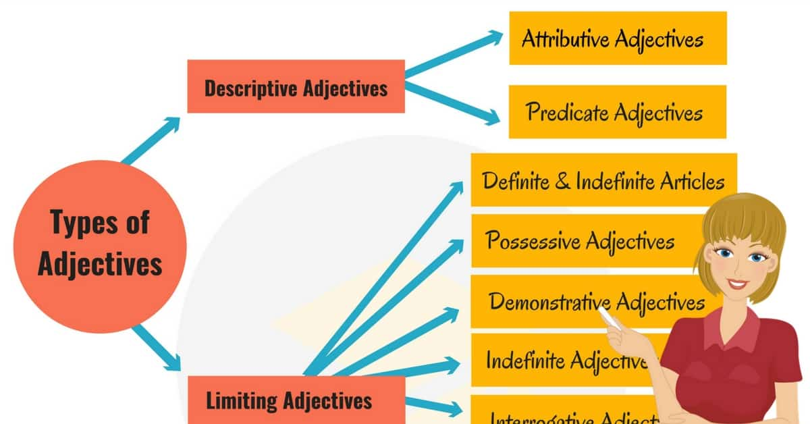

What is an adjectives?
An adjective describes or modifies noun/s and pronoun/s in a sentence. It normally indicates quality, size, shape, duration, feelings, contents, and more about a noun or pronoun.
In a sentence, nouns can play the role of subject, direct object, indirect objects, subject complement, object complement, appositive, or adjective.

TYPES OF ADJECTIVES
- Descriptive Adjectives:
- A descriptive adjective is a word which describes nouns and pronouns. Most of the adjectives belong in this type. These adjectives provide information and attribute to the nouns/pronouns they modify or describe. Descriptive adjectives are also called qualitative adjectives.Examples:-
- I saw a flying Eagle
- The hungry cats are crying.
- Quantitative Adjectives:
- A quantitative adjective provides information about the quantity of the nouns/pronouns. This type belongs to the question category of ‘how much’ and ‘how many’.
Examples:-
- They have
threechildren.
- You should have completed the whole task.
- Proper adjectives
- Proper adjectives are the adjective form of proper nouns. When proper nouns modify or describe other nouns/pronouns, they become proper adjectives.
Examples:-
- American cars are very strong.
- I love KFC burgers.
- Demonstrative Adjectives
- A demonstrative adjective directly refers to something or someone. Demonstrative adjectives include the words: this, that, these, those.
Examples:-
- This car is mine
- These cats are cute.
- Possessive Adjectives
- A possessive adjective indicates possession or ownership. It suggests the belongingness of something to someone/something.
Examples:-
- My car is parked outside.
- Our job is almost done.
- Interrogative Adjectives
- An interrogative adjective asks a question. An interrogative adjective must be followed by a noun or a pronoun. The interrogative adjectives are: which, what, whose. These words will not be considered as adjectives if a noun does not follow right after them. ‘Whose’ also belongs to the possessive adjective type.
Examples:-
- Which phone do you use?
- What What game do you want to play?
- Indefinite Adjectives
- An indefinite adjective describes or modifies a noun unspecifically. They provide indefinite/unspecific information about the noun. The common indefinite adjectives are few, many, much, most, all, any, each, every, either, nobody, several, some, etc.
Examples:-
- I gave some candy to her
- I want a fewmoments alone.